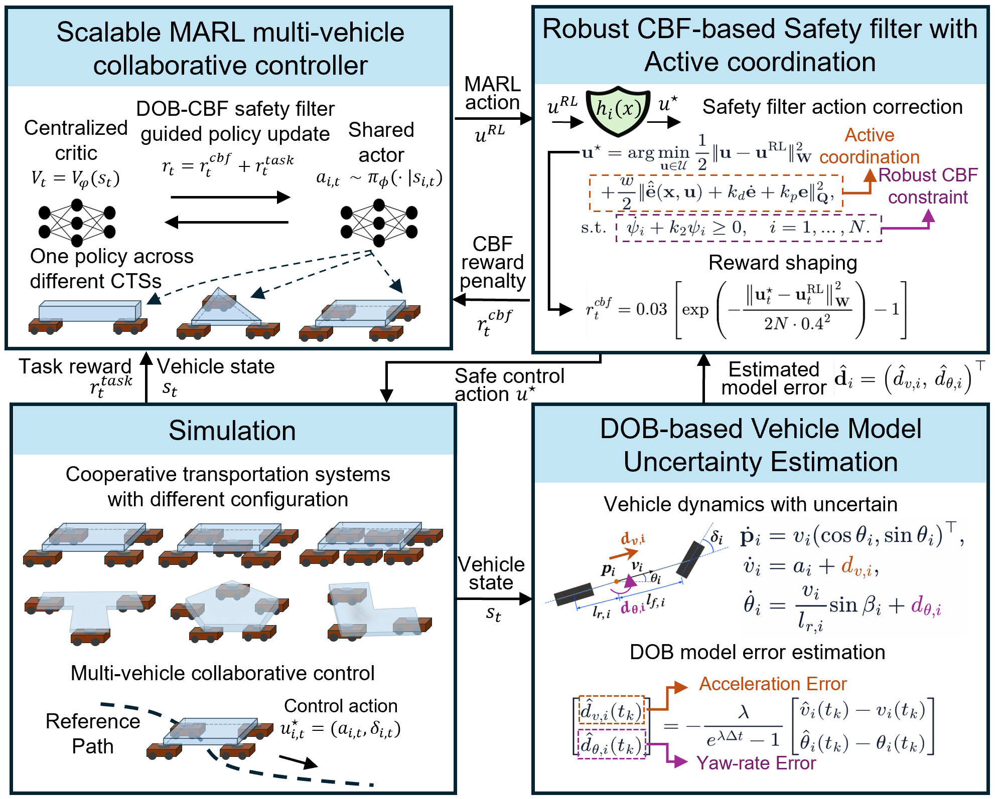
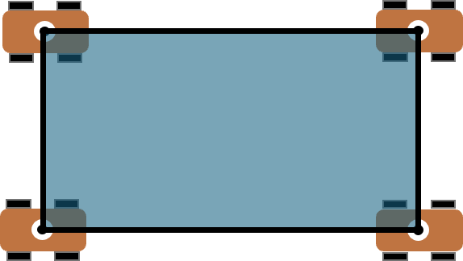
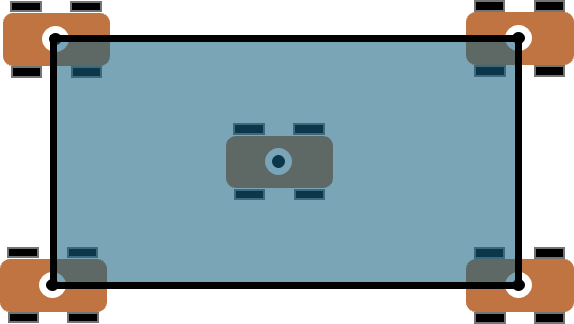
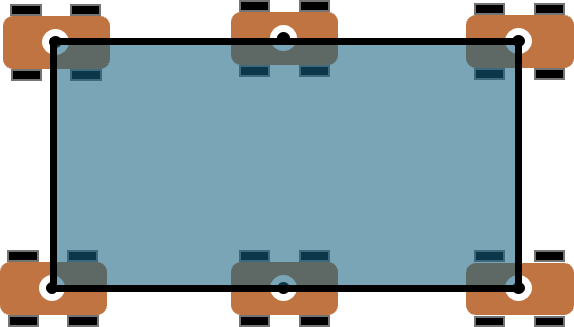
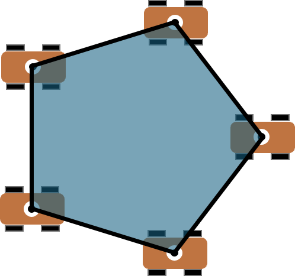
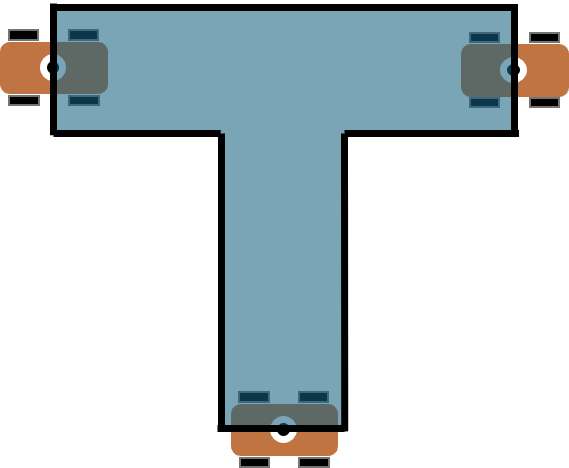
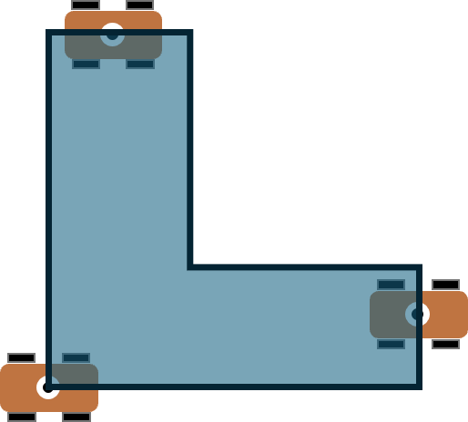

Estimate model errors
A disturbance observer estimates and compensates for acceleration and yaw-rate mismatches online to improve the modeling accuracy of carrier vehicle dynamics.
Maintaining safe multi-vehicle coordination in cooperative transportation systems (CTS) is challenging under model errors and variations in vehicle count and payload configuration. In this paper, we propose a novel safe multi-agent reinforcement learning (MARL) framework for scalable multi-vehicle collaborative control in CTS under model uncertainty. Specifically, to improve the modeling accuracy of carrier vehicle dynamics, we develop a disturbance observer that estimates and compensates for model errors online. Based on these estimates, we construct a robust high-order control barrier function safety filter with active coordination to bound coordination errors and suppress their accumulation. Building on this filter, we propose a novel MARL algorithm that integrates it to learn a safe and scalable multi-vehicle collaborative control policy. The learned policy can be reused across CTS with different vehicle counts and payload configurations without retraining. Experiments show that our method reduces coordination error by 76.4% and tracking error by 62.2% compared with the best baseline. It also demonstrates superior robustness to model errors, achieving over 97% task success with coordination errors below 0.01 m across varying model error scales. The same policy achieves 100% task success in scalability tests across unseen CTS configurations.

A disturbance observer estimates and compensates for acceleration and yaw-rate mismatches online to improve the modeling accuracy of carrier vehicle dynamics.
Robust high-order CBF constraints bound coordination errors. An active coordination objective reduces deviations within the safe set.
A shared actor and pooled critic features support different team sizes. The learned policy transfers across vehicle counts and payload configurations without retraining.
We compare our method with IPPO, MADDPG, and MAPPO-Lag in cooperative transportation with two to four carriers. Tests cover linear, triangular, and square configurations along straight, left-turn, and sinusoidal paths.
Each video shows straight, left-turn, and sinusoidal paths, with 2, 3, and 4 carriers in each group, at normal speed. These selected demonstrations show successful runs for Ours and mixed outcomes for the baselines; some test cases differ between methods. Failures are labeled at termination.
| Method | Return ↑ | Success rate (%) ↑ | Coordination error (cm) ↓ | Tracking error (cm) ↓ |
|---|---|---|---|---|
| IPPO | 14.48 ± 4.38 | 61.85 ± 5.25 | 1.57 ± 0.23 | 22.92 ± 2.62 |
| MADDPG | 24.68 ± 5.34 | 70.37 ± 12.88 | 3.88 ± 0.84 | 28.29 ± 0.49 |
| MAPPO-Lag | 29.55 ± 26.85 | 76.30 ± 29.13 | 2.03 ± 0.59 | 31.35 ± 14.78 |
| Ours | 43.74 ± 0.13 | 100.00 ± 0.00 | 0.37 ± 0.05 | 8.66 ± 2.55 |
↑ Higher is better. ↓ Lower is better. Results are reported as mean ± standard deviation.
Our method (Ours) reuses a single policy without retraining for rectangular payloads with four to six carriers and unseen pentagonal, T-shaped, and L-shaped payloads. Across all tested configurations on circular-arc, Z-shaped, and Ω-shaped paths, Ours achieves 100% task success with zero coordination violations.

Rectangle
100% success
Rectangle
100% success
Rectangle
100% success
5 carriers
100% success
3 carriers
100% success
3 carriers
100% successEach video shows nine successful Ours runs at normal speed: circular-arc, Z-shaped, then Ω-shaped paths, with the three configurations shown below each video in order. All runs use the same policy without retraining.
Configuration summaries show mean results. Full comparisons and standard deviations are provided in the paper.
@misc{anonymous2026safemarl,
title = {Safe Multi-Agent Reinforcement Learning for Robust and Scalable
Multi-Vehicle Control in Cooperative Transportation Systems},
author = {Anonymous},
year = {2026},
note = {Anonymous submission}
}Anonymous submission. Citation details will be updated after review.